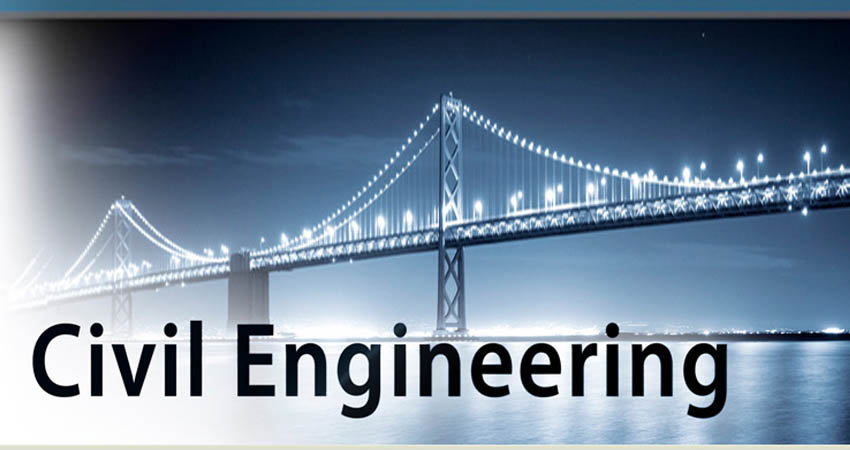

Managing moving machines of the world! It is this catchy phrase that has made Mechanical Engineering the thriving branch for being an integral part in shaping our world run on machines. The Mechanical Engineering department at Aditya has earned a place of high repute through its quality teaching rendered by highly qualified and experienced faculty with umpteen number of research publications in reputed journals like ASME, ELSEVIER etc. and rigorous practical training creating an ambience of excitement in all the stages of study.
The department lays impetus on hands-on training with the support of simulation packages such as CATIA, ANSYS, I-DEAS, PRO-E, UNIGRAPHICS and SOLID WORDS.
The professional activities include guest lectures, industrial visits, workshops, seminars, technical festivals VEDA and programs under Mechanical Engineering Students Association (MESA), collegiate club of the Society of Automotive Engineers (SAE) and Auto gear club.
The projects that received appreciation in various events organized at state and national level are Go-Kart, Quad bike, E-Bike, Reaping Machine and many more such highly relevant contraptions.
Students are encouraged to do internships in reputed industries like TATA Motors PVT. LTD., Hindustan Shipyard, BHEL PVT. LTD., Bhilai Steel Plant, Bokaro Thermal Power Station, Nalco Mining Division etc.
We are the power of the World
Electrical and Electronics Engineering
Department of Electrical and Electronics Engineering
Established as one of the major departments of the Institute, the Department of Electrical and Electronics Engineering at NARAYANA EDUCATION ACADEMY strives to produce highly competent engineers equipped with advanced professional knowledge, entrepreneurial thinking, professional and ethical attitude, critical problem solving and analytical skills through effective teaching learning process, research and industrial collaboration.
The faculty of the department, a rich blend with academic and industrial experience, have been constantly carrying out research on many cutting edge technologies with regular publications in ELSEVIER and other top international journals. The academic quality of the department is reflected by the laurels won by the students and the distinguished positions in industry and academia occupied by alumni.
The department strives to upgrade the knowledge of faculty and students by organizing various Workshops, Industry-Institute Interactions, Continuous Improvement Programs inviting eminent personalities from Industry and academic Institutions, Seminars and Research activities. Students are provided internship programs in various power plants and industries like Reliance, SAIL, HPCL, GMR, GVK, VTPS, Vizag steel plant, ONGC, APGPCL, APEPDCL etc.
The department spares no expense to equip the labs with latest equipment like Three phase AC Integrated Machine, DC Integrated Machine, Wireless Transmission of Electric Power using Tesla Coil and technical software like MATLAB & P-Spice.
Build the Future with
Civil Engineering
Department of Civil Engineering

‘Apara Bhageeratha’- Sir Arthur Cotton remains revered and enjoys the pride of place in the hearts of the people in coastal Andhra Pradesh for being the genius architect behind the projects that made the delta region the ‘Rice Bowl’ for the state. With this inspiration taken form the genius architect, the department of Civil Engineering at Aditya College of Engineering transfers innovative applications to improve Civil Engineering practices which fulfil the requirements of civil construction industry.
To face the challenges in the field, the department associates itself in different consultancy activities like quality control, design, detailing, soil testing and concrete testing to the construction sites in the close vicinity. To shore up transition of knowledge, eminent personnel from industry and academia are invited to deliver technical talks on emerging areas to keep the students abreast with the latest advancements.
The department has state-of-the-art facilities, latest software like STAAD.Pro, AUTOCAD, Revit Structures, Robot Structure analysis etc. and well-equipped laboratories with costly equipment such as Total Station, Universal Testing Machine, Tri-axle Shear Testing Machine, Kaplan turbine, Francis turbine, Pelton wheel testing rig, Compression testing machine, Ultrasonic pulse velocity equipment etc.
The department offers unique internship opportunities to students in companies like L&T Construction, Reliance Industries Limited, OIL, Irrigation Department, Govt. of A.P., Soma Constructions, APCO Infra tech, Vizag Steel Plant etc.
No resistance can drop our potential
Electronics and Communication Enginnering
Department of Electronics and Communication Enginnering
With new ideas emerging relentlessly, both the graduation and post-graduation programs of Electronics and Communication Engineering Department try to excel by focussing on the needs of industry and society through student centric methodologies which is reflected in placements every year.
The department is well-equipped with the state-of-art laboratories which encompass the wide area of applied and fundamental aspects of the prescribed curriculum. In addition, the department enables training on advanced technologies through Texas Instruments Innovation lab, E-Yantra Robotics Lab, Intel Intelligent Systems Lab etc.
The department has signed MOUs with various industries for internship like BHEL, ONGC, Hindustan Shipyard Ltd, BSNL, Airports authorities of India, DLRL – Hyderabad, Rashtriya Inspat Nigam Limited etc.
The faculty of the department persistently carry out research and are specialists from the fields of device electronics, signal and image processing, antennas, microwave & optical engineering, wireless communication, embedded systems and VLSI design.
Makes our world smaller & our Future Brighter
Computer Science and Engineering
Department of Computer Science and Engineering
With Global Excellence, National Relevance and Industry preference as prime motto, the Department of Computer Science and Engineering fosters greater learning experience by providing a broader scientific and practical approach to computation and its applications.
The department has been consistently fulfilling its role by transforming students into technically competent, socially responsible and ethically professional graduates. Remarkably, two students of the department received gold medals for being the toppers at the university level.
Well-equipped class rooms, well networked Lab setups with latest software, Industry- Integrated projects, creative teaching-learning process, research based activities in the emerging areas, impressive placements, certification courses make the department well advanced on the professional front.
Flagging the reputation of NARAYANA EDUCATION ACADEMY at national and international levels, the faculty of the department have been conferred with numerous prestigious awards and accolades. Several faculty members review technical articles for journals, serve on the editorial boards of national and international journals, deliver guest lectures and organize workshops and symposia.
Makes our world smaller & our Future Brighter
Computer Science and Engineering(IOT)
Department of Computer Science and Engineering -IOT
With Global Excellence, National Relevance and Industry preference as prime motto, the Department of Computer Science and Engineering fosters greater learning experience by providing a broader scientific and practical approach to computation and its applications.
The department has been consistently fulfilling its role by transforming students into technically competent, socially responsible and ethically professional graduates. Remarkably, two students of the department received gold medals for being the toppers at the university level.
Well-equipped class rooms, well networked Lab setups with latest software, Industry- Integrated projects, creative teaching-learning process, research based activities in the emerging areas, impressive placements, certification courses make the department well advanced on the professional front.
Flagging the reputation of NARAYANA EDUCATION ACADEMY at national and international levels, the faculty of the department have been conferred with numerous prestigious awards and accolades. Several faculty members review technical articles for journals, serve on the editorial boards of national and international journals, deliver guest lectures and organize workshops and symposia.
Makes our world smaller & our Future Brighter
Computer Science and Engineering(AI&ML)
Department of Computer Science and Engineering - AI & ML
With Global Excellence, National Relevance and Industry preference as prime motto, the Department of Computer Science and Engineering fosters greater learning experience by providing a broader scientific and practical approach to computation and its applications.
The department has been consistently fulfilling its role by transforming students into technically competent, socially responsible and ethically professional graduates. Remarkably, two students of the department received gold medals for being the toppers at the university level.
Well-equipped class rooms, well networked Lab setups with latest software, Industry- Integrated projects, creative teaching-learning process, research based activities in the emerging areas, impressive placements, certification courses make the department well advanced on the professional front.
Flagging the reputation of NARAYANA EDUCATION ACADEMY at national and international levels, the faculty of the department have been conferred with numerous prestigious awards and accolades. Several faculty members review technical articles for journals, serve on the editorial boards of national and international journals, deliver guest lectures and organize workshops and symposia.
Imbiming best Humane and professinal Values of Life
Humanities and Basic Sciences
Department of Humanities and Basic Sciences
The Department of H&BS aims to provide a powerful base in the basic sciences and communicative English to the major engineering disciplines like ECE, CSE, IT, MECH, EEE, CIVIL, PT Engineering.
English, Engineering mathematics, Engineering Physics, Engineering Chemistry, Engineering Drawing and Computer programming are the key subjects taught in the first year of Engineering curriculum.
The dedicated team of H&BS is really a substantial strength to the institution. It has five Doctorates, 10 Associate Professors and 20 Assistant Professors. First year is the stone(backbone) of technical education and the department enables the student to handle complicated situation and solution through comprehensive knowledge in Engineering mathematics, Engineering Physics, Engineering Chemistry, Environmental Science and Communicative English,
In addition to the regular curricular activities students imbibe the essential quality of human values and students are motivated to know what is constitution and fundamental duties of a citizen.
The departments conduct induction program to the students to instil in them moral values which is the crux of life. It imparts excellent quality education for all engineering streams which includes personality development and career counselling etc.
The department has its own monitoring system namely Proctor method which looks after the attendance, academic performance and other extracurricular activities and the progress reports are sent to the parent from time to time and interact to the parents every day.
The department has its own department library for the reference and knowledge updation of both faculty members and students. Teaching material prepared by the subject experts is also available for the issual from the department library. The department has well equipped laboratories in Physics, Chemistry and Specially a Digital language laboratory and even the classrooms are equipped with digital setup
We are reimagining & Pre-requisites for business leaders and managers
Master of Business Administration
Department of Master of Business Administration
The department of MBA was established in the year 2009. The faculty of the department are highly qualified and experienced in specializations of Finance, HRM and Marketing. MBA programs teach students analytical skills, long-term strategic thinking and leadership skills to provide an opportunity to get better career opportunities.
The guiding factors of the department are inspired by internationally accepted values and these principles are helpful to create new generation business leaders. The department has well equipped class rooms and computer laboratories.
Certification courses such as Tally, Business skills, Web development with word press etc are provided to the students. Workshops and seminars will be conducted to improve managerial skill of the students and also it provides an opportunity to interact with experts in specific field.
Professional activities like industrial trips, guest lectures and management activities are more focussed. Students are encouraged to participate in all these activities to get more practical exposure.


.png)